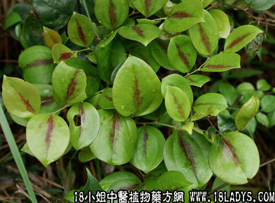

别名：铁菱头、马甲头、车夹簕头。
植物名：菝葜。
生长环境：本品为落叶、扳援状灌木，生于广州近郊丘陵地及疏林下。
分布：广布于我国长江一南地带。
入药部分：根。
采集期：全年采根。
自采地点：郊野、山岗。
性味：性凉，味淡微甘。
功能：清暑散热、化气导滞、止血。
主治、用量和用法：1、癍痧热症：用干根1至2两、清水煎服；2、大肠湿热：干根1至2两，清水煎服；3、腹泻：用法同上；4、下血干根1至2两，清水煎服；或加猪瘦肉同煎。
验方：（治癍痧方）金岗头1两、山芝麻5钱、鸭脚树皮5钱、海金沙藤5钱、三桠皮5钱、清水四碗、煎成一碗、温服。
（方解）金岗头去湿清热；山芝麻、鸭脚树皮解肌；海金沙藤去小肠湿热；三桠苦清热解毒。以上对癍痧湿热有效。
（方歌）癍痧湿热山芝麻，金岗头下海金沙，鸭脚树皮三桠苦，轻扬解毒此方夸。
附录：本品水煎后呈紫红色，故市售凉茶多用此药调色；民间用一煮粥，有清热作用。